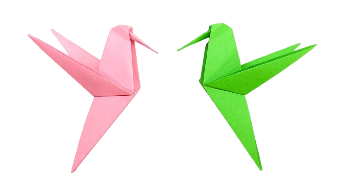
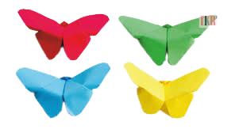

Oragami Designs
Here are some Oragami designs:


 About Us
About Us
Follow Us
Facts About Oragami
- From (1603–1868), paper folding in Japan had become recreational as well as ceremonial
- Featured multiple cuts and folds.
- It came to be regarded as a new form of art that was enabled by the advent of paper
- Both mass-produced and more affordable.
- Written instructions for paper folding first appeared in 1797
- In 1845, Adachi Kazuyuki published a more comprehensive compilation of paper folding with Kayaragusa
- In the late 1800s, the term for paper folding had morphed from orikata (“folded shapes”) to origami.